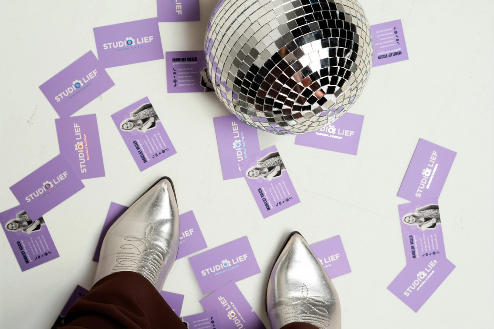
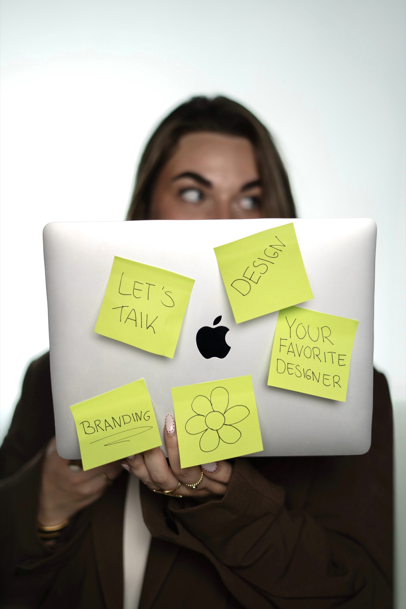
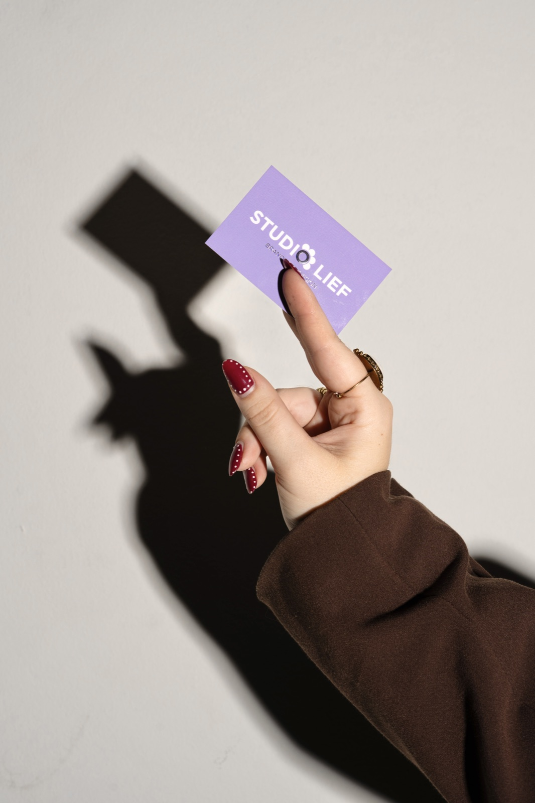

OVER

HEY! IK BEN MADELIEF
“Ik vind het belangrijk dat een ontwerp niet alleen mooi is, maar ook karakter heeft.”
Als kind was ik altijd aan het creëren. Met een potlood, verf of knutselspullen binnen handbereik wist ik al vroeg dat ik later iets met mijn creativiteit wilde doen. In mijn jeugd droomde ik ervan tekendocent te worden, maar tijdens mijn opleiding Mediavormgeving ontdekte ik waar mijn passie echt lag: grafisch vormgeven.
Tijdens mijn studie begon ik met kleine opdrachten, zoals flyers voor de groenteboer om de hoek. Via stages bij onder andere Rumag, SoWhat!, ComplexNL en #Darum! groeiden mijn ervaring en ambitie. Ik werkte aan grotere mediaprojecten, ontdekte hoe veelzijdig de creatieve wereld is en zette uiteindelijk de stap naar mijn eigen designstudio: Studio Lief | Branding & Design.
Wat ik het leukste vind aan mijn werk is het hele creatieve proces. Van het eerste gesprek en brainstormen tot schetsen, conceptontwikkeling en de digitale uitwerking. Mijn ideeën beginnen simpelweg met pen en papier en groeien stap voor stap uit tot een sterk en herkenbaar merk.
Met Studio Lief richt ik mij op ondernemers die een stijlvolle en authentieke uitstraling willen creëren. Vaak zijn dit stedelijke bedrijven binnen de media, creatieve industrie, lifestyle en tech. Ik help hen om hun merk herkenbaar en professioneel neer te zetten, zodat zij trots kunnen zijn op hun uitstraling én hun beoogde doelgroep kunnen aanspreken. Mijn designstijl is stijlvol, modern en opvallend, met een eigenzinnige touch. Ik vind het belangrijk dat een ontwerp niet alleen mooi is, maar ook karakter heeft en past bij het merk erachter. Daarbij werk ik bewust vanuit mijn eigen creativiteit. Geen standaard Canva-template en geen AI die het merk voor je bedenkt, maar een persoonlijk proces waarin ideeën met de hand ontstaan en vervolgens digitaal worden uitgewerkt.
Persoonlijk contact, enthousiasme en een kritische blik staan daarbij centraal. Door goed te luisteren, mee te denken en open te communiceren wil ik niet alleen sterk design maken, maar ook een samenwerking creëren waarop je kunt vertrouwen.
Met Studio Lief wil ik blijven groeien en een designstudio neerzetten waarin mijn liefde voor design, mijn persoonlijke werkwijze en mijn eigen visie volledig samenkomen.
Ik geloof dat...
een goed ontwerp meer is dan alleen iets moois. Het vertelt een verhaal, geeft een merk karakter en zorgt ervoor dat het de juiste doelgroep aanspreekt.
Tijd om jouw
merk te laten
uitblinken
LET'S TALK
